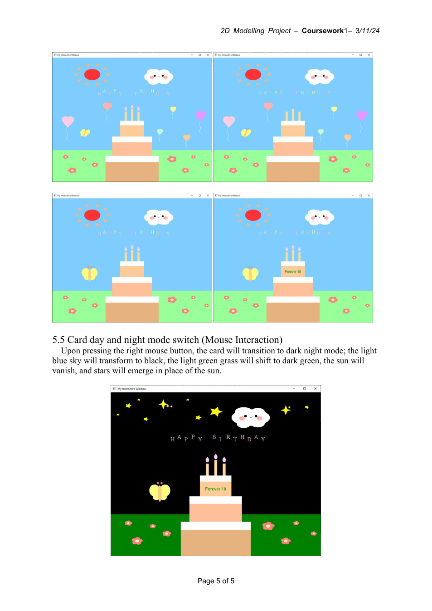
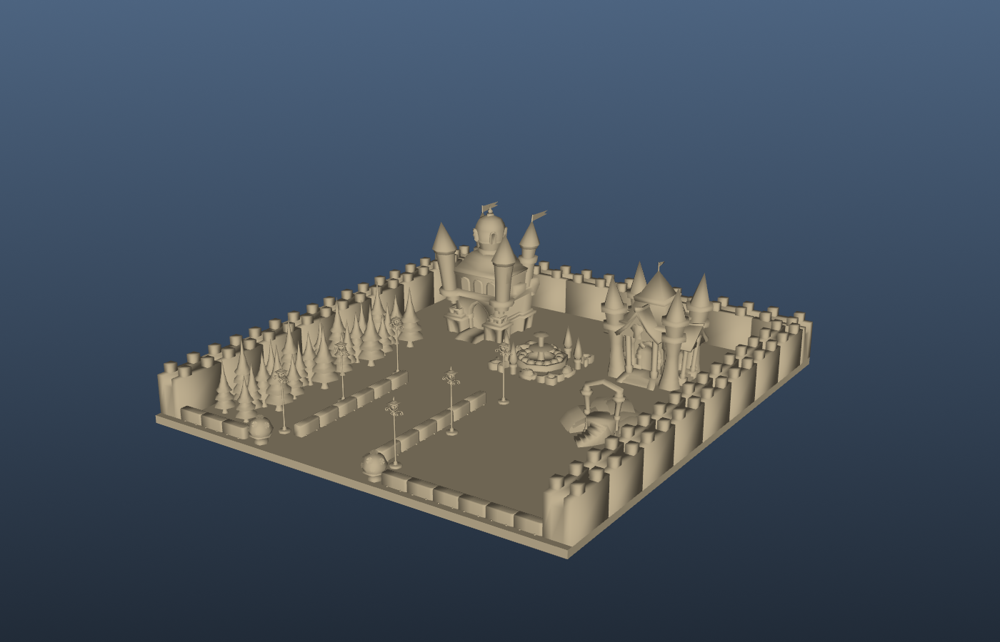

OpenGL · Castle showcase
Original scene assets and a model-derived render of the castle geometry.
CPT205 · Computer graphics · C++ / FreeGLUT
01 · Problem & goal
Explore real-time interaction in a 2D birthday card, then apply spatial modelling, lighting and camera concepts in a separate 3D castle scene.
02 · My contribution
Used C++ and FreeGLUT for primitives, animation, transformations and keyboard/mouse interaction; the castle source loads OBJ geometry and environment assets.
03 · Implementation approach
The 2D FreeGLUT program uses primitives, transformations, animation and keyboard/mouse input, including day/night state changes. A separate castle scene uses original OBJ geometry, textures, lighting and camera utilities. These are two distinct graphics assignments.
The report describes five petals spaced by 72° and ten sun rays spaced by 36°. Reusable drawing functions reduce repetition, while state variables separate the scene’s appearance from its interaction logic.
Source: OpenGL report §§1–4.
04 · Results & reflection
The card responds visibly to input: it changes the day/night scene, fades candle flames, releases balloons and transforms a butterfly. The work connects geometric composition, persistent scene state and repeated animation updates.
| Input | Visible result | Graphics concept |
|---|---|---|
| Right mouse click | Blue sky and green grass become a night scene; sun disappears and stars appear | State-driven drawing and color changes |
| Left mouse click | Flame opacity drops by 0.1; ten clicks extinguish it | Alpha/opacity state |
| W/A/S/D; r/R; q/e | Move, rotate and scale the butterfly | Translation, rotation and scaling |
| Space | Balloons rise until they leave the screen | Timer-driven position updates |
| Enter | Display the birthday message above the cake | Event-controlled text placement |
Source: OpenGL report §§2, 4 and 5.
The castle assignment extends the graphics work to loaded OBJ meshes, camera viewing, lighting, textures and a six-face skybox. The geometry render below helps explain the scene’s structure; it is separate from the 2D card and from an original application screenshot.
05 · Demonstration & visuals


06 · Source & project materials
Original scene assets and a model-derived render of the castle geometry.
Geometric primitives, day/night interaction, animation and transformations.
Original reports and source materials support the summary above. Team contributions and validation limits are stated on this page.